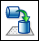
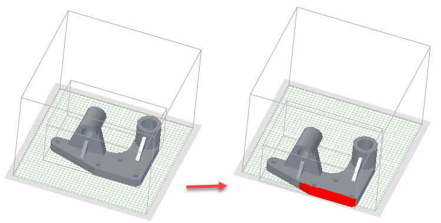
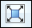
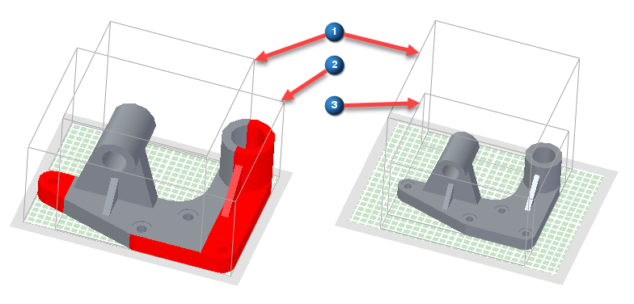
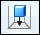

Reorient command
The 3D Print tab→Prepare group→Reorient command

positions the part model in the printer space. Define the printer settings and then use the positioning options on the Reorient command bar to find the optimum position to print your model.Whenever the model exceeds the printer space, the portions of the part model outside the printer space display in red.

If the model is larger than the printer space, use the Scale to Fit option

to resize the model to fit inside the printer space.-
(1) printer space
-
(2) model space
-
(3) scaled model space

The Settle option

positions the model's closest planar face to the printer bed while maintaining its current orientation.To manually reposition the model, use the Move or Rotate options.
-
To move the model, select Move on the command bar. Enter a distance in the X, Y, or Z fields and press Enter. You can only move in one direction at a time. Pressing Enter again performs another move of the same distance and direction. Selecting the Move action list resets the field values. The move always uses the X, Y, or Z field that has focus.
-
To rotate the model, select Rotate on the command bar. Enter a rotation angle in the X, Y, or Z fields and press Enter. You can only rotate around one axis at a time. Pressing Enter again performs another rotation around the same axis using the same angle. Selecting the Move action list resets the field values. The rotation always uses the X, Y, or Z field that has focus.
Select the Auto Orient option to quickly reorient the model. Each click proceeds to another orientation. This option can speed up the reorientation process without having to manually reorient the model. Use the Undo and Redo options to go back and forth while repositioning the model. If you want to return to the original orientation, select the Reset Orientation option.
How do I
Print directly to a 3D printerOpen a Solid Edge file in 3D Builder
Scale a model for 3D printing
Save a 3D print file to disk
Create a 3D Print material
Validate a 3D print model
Check wall thickness for 3D print
Learn more
Printing solid modelsUsing the 3D Print page
Look up more details
Selecting a file format for additive manufacturingOverhang command
Overhang command bar
Print Material command
Print Validations command
Print Validations dialog box
Wall Thickness command
Wall Thickness command bar
Physical Thread command
Physical Thread command bar
Reorient command bar
Quick links
Working with .stl documents in Solid EdgeExport Options for STL (.stl) dialog box
Export Options for 3MF dialog box
Related Topics
Delete Voids commandDelete Voids command bar